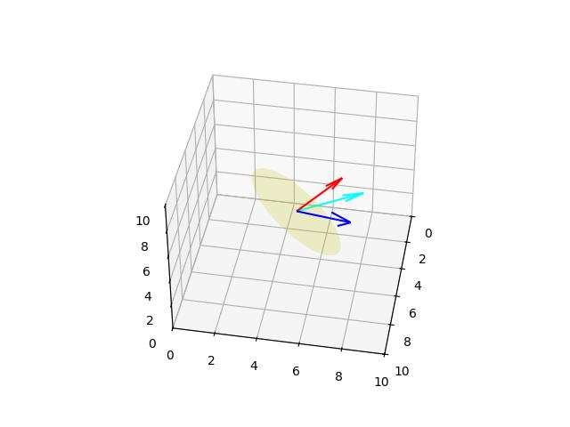
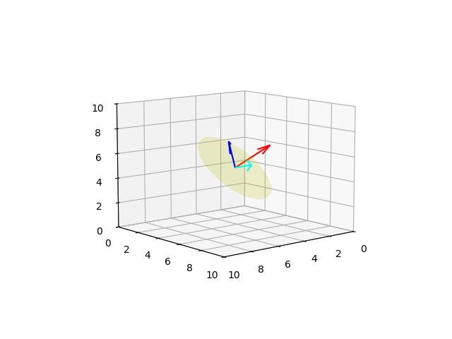
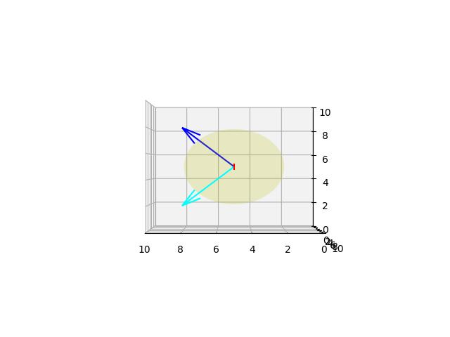

Döndürme (Rotation) - 2
Herhangi Bir Eksen (Vektör) Etrafında Dönüş
Daha öne Rodriguez yöntemi ile yaptığımız döndürme yaklaşımını bir başka teknikle göstereceğiz. Bulmak istediğimiz $\vec{n}$ etrafında $\theta$ dönüşü yaptıracak bir matris, yani öyle bir matris $R(\vec{n},\theta)$ arıyoruz ki bu matrisle $\vec{v}$ vektörünü sağdan çarpınca $\vec{v}'$ elde edilecek ve bu yeni vektör $\vec{v}$ vektörünün $\vec{n}$ etrafında $\theta$ kadar dönmüş hali olacak [1, sf. 142]. Yazının geri kalanında $\vec{v} = v$, $\vec{n} = n$..
$$ v' = v R(n,\theta) $$
$R(n,\theta)$ matrisini türetmek için önce $v'$ vektörünü $v,n,\theta$ bazında temsil etmeyi görelim. Ana fikir problemi $n$'ye dik olan düzlem üzerinde çözmek, ki bu şekilde 3 boyutlu problemi 2 boyutlu bir probleme indirgemiş oluyoruz. İndirgeme için $v$ vektörünü iki $v_\parallel$ ve $v_\perp$ vektörüne ayıracağız, öyle ki $v = v_\parallel + v_\perp$. Sonra bu ki vektörü ayrıca döndüreceğiz ve böylece onların toplamları da dönmüş olacak, yani $v' = v'_\parallel + v'\perp$. Buraya kadar gördüklerimiz Rodriguez yaklaşımına benziyor.

Tekniğin iyi tarafı $v_\parallel$ vektörü $n$ vektörüne paralel olduğu için $n$ etrafında dönüşten etkilenmez, o zaman sadece $v_\perp$ vektörünü döndürmek yeterlidir, böylece $v' = v_\parallel + v'_\perp$ hesaplanabilir.
Hesap için şu adımları takip ediyoruz,
- $v_\parallel$ vektörü $v$ nin $n$ ye paralel olan şeklidir, ya da $v$ vektörünün $n$ üzerinde yansıtılmış halidir [2], bu formülün $v_\parallel = (v \cdot n) n$ olduğunu biliyoruz.
- $v_\perp$ vektörü $v$ nin $n$ ye dik olan kısmıdır. $v = v_\parallel + v_\perp$ olduğu için $v_\perp = v - v_\parallel$.
- Üstteki şekilde $w$ vektörü var, bu vektör $v_\perp$ ve $v_\parallel$ ile diktir, ve uzunluğu $v_\perp$ ile aynıdır. Bu vektör $v_\perp$ vektörünü 90 derece döndürerek elde edilebilir. Bu sebeple $w = n \times v_\perp$.
Bu vektörlerle nasıl $v'$ hesaplayacağız? Dikkat edersek $w$ ve $v_\perp$ bir 2D kordinate uzayı oluşturuyor. $v'_\perp$ vektörü $v'$ yi bu uzayda $\theta$ kadar döndürerek elde edilebilir. Bu dönüşün formülünün
$$ v'_\perp = \cos \theta v\perp + \sin \theta w $$
olduğunu biliyoruz (ispatı bu anlatım ardından paylaşılıyor).
Şimdi eldeki formüllere bakalım:
$$ v_\parallel = (v \cdot n) n $$
$$ v_\perp = v - v_\parallel $$
$$ = v - (v \cdot n) n $$
$$ w = n \times v_\perp $$
$$ = n \times (v - v_\parallel) $$
$$ = n \times v - n \times v_\parallel $$
$n$ ve $v_\parallel$ birbirine paralel olduğu için çapraz çarpımları sıfırdır,
$$ = n \times v - 0 $$
$$ w = n \times v $$
$$ v'_\perp = \cos \theta v\perp + \sin \theta w $$
$$ = \cos \theta (v - (v \cdot n) n) + \sin \theta (n \times v) $$
Üstteki değeri $v'$ formülü içine sokalım,
$$ v' = v'_\perp + v\parallel $$
$$ v' = \cos \theta (v - (v \cdot n) n) + \sin \theta (n \times v) + (v \cdot n) n $$
import sys; sys.path.append('../phy_072_rot')
from mpl_toolkits.mplot3d import Axes3D
import plot3d
def rotate(v, n, theta):
return np.cos(theta) * ( v - np.dot(v,n) ) + \
np.sin(theta)* np.cross(n,v) + \
np.dot(v,n)*n
o1 = np.array([5,5,5])
v1 = np.array([3,3,3])
n1 = np.array([-1/3.,2/3.,2/3.])
theta = np.deg2rad(20)
v1r = rotate(v1, n1, theta)
fig = plt.figure()
ax = Axes3D(fig)
plot3d.plot_vector(fig, o1, v1)
plot3d.plot_vector(fig, o1, v1r, 'cyan')
plot3d.plot_vector(fig, o1, 3*np.array(n1), 'red')
plot3d.plot_plane(ax, o1, n1, size=3)
ax.view_init(elev=40., azim=10)
plt.savefig('phy_073_rot_02.jpg')

Teori
3D A,B vektörleri birbirine dikgen ve bir 2D uzay yaratıyorlar, ki sanki A vektörü $x$ ekseni, B ise $y$ ekseni. A vektörünün $\theta$ açısı kadar döndürülmesi $Y = \cos \theta A + \sin \theta B$ vektörünü verir (üstteki problemde $A = v_\perp$, $B = w$).
İspat
A ve B 3D uzayında bir 2D düzlemi kapsayan iki dikgen vektör ise, A ve B'yi bu 2D düzlem için baz vektörleri olarak düşünebiliriz. A ve B tarafından kapsanan düzlemdeki herhangi bir X vektörü, A ve B'nin bir doğrusal birleşimi olarak ifade edilebilir:
$X = x_A A + x_B B$
Burada, $x_A$ ve $x_B$, X'in A ve B doğrultularındaki bileşenleridir.
A vektörü için, {A, B} bazındaki temsili, A doğrultusundaki bileşenin 1 ve B doğrultusundaki bileşenin 0 olduğu durumdur. Yani, A'yı bu 2D baz sisteminde "x ekseni" ve B'yi "y ekseni" olarak düşünebiliriz, burada A'nın "koordinatları" (1, 0) olur.
Şimdi, A vektörünü A ve B'nin kapsadığı düzlem içinde $\theta$ açısı kadar döndürelim. Ortaya çıkan vektöre Y diyelim. Standart bir 2D Kartezyen koordinat sisteminde, koordinatları $(x, y)$ olan bir vektör $\theta$ açısı kadar saat yönünün tersine döndürüldüğünde, yeni koordinatları $(x', y')$ şu şekilde bulunur:
$x' = x \cos \theta - y \sin \theta$
$y' = x \sin \theta + y \cos \theta$
Bizim durumumuzda, A vektörünün {A, B} bazındaki başlangıç "koordinatları" $(1, 0)$'dır. A'yı $\theta$ kadar döndürdüğümüzde, ortaya çıkan Y vektörünün {A, B} bazındaki yeni "koordinatları", $(y_A, y_B)$, $(x, y) = (1, 0)$ kullanılarak 2D döndürme formülleriyle bulunabilir:
$y_A = 1 \cdot \cos \theta - 0 \cdot \sin \theta = \cos \theta$
$y_B = 1 \cdot \sin \theta + 0 \cdot \cos \theta = \sin \theta$
Dolayısıyla, döndürülen Y vektörünün {A, B} bazındaki bileşenleri, A doğrultusunda $\cos \theta$ ve B doğrultusunda $\sin \theta$ olur.
Şimdi Y vektörünü, bu bileşenleri kullanarak baz vektörler A ve B'nin doğrusal birleşimi olarak yazabiliriz:
$Y = y_A A + y_B B$
$Y = \cos \theta A + \sin \theta B$
Bu, A vektörünün A ve B'nin kapsadığı 2D düzlem içinde $\theta$ açısı kadar döndürülmesinin $Y = \cos \theta A + \sin \theta B$ vektörünü verdiğini kanıtlar. Bu, bir 2D Kartezyen düzlemde x eksenindeki $(1, 0)$ vektörünün $\theta$ kadar döndürüldüğünde $(\cos \theta, \sin \theta)$'ye dönmesiyle benzerdir. A ve B vektörleri, 3D uzayında bu 2D dönüşüm için eksenleri sağlar.
Dörtlü Grup / Kuaterniyon (Quaternions)
Turetim [1, sf. 281]
import math
def q_mult(q1, q2):
w1, x1, y1, z1 = q1
w2, x2, y2, z2 = q2
w = w1 * w2 - x1 * x2 - y1 * y2 - z1 * z2
x = w1 * x2 + x1 * w2 + y1 * z2 - z1 * y2
y = w1 * y2 + y1 * w2 + z1 * x2 - x1 * z2
z = w1 * z2 + z1 * w2 + x1 * y2 - y1 * x2
return w, x, y, z
def q_conjugate(q):
w, x, y, z = q
return (w, -x, -y, -z)
def normalize(v, tolerance=0.00001):
mag2 = sum(n * n for n in v)
if abs(mag2 - 1.0) > tolerance:
mag = math.sqrt(mag2)
v = tuple(n / mag for n in v)
return v
def axisangle_to_q(v, theta):
v = normalize(v)
x, y, z = v
theta /= 2
w = math.cos(theta)
x = x * math.sin(theta)
y = y * math.sin(theta)
z = z * math.sin(theta)
return w, x, y, z
def rotate(q1, v1):
q2 = (0.0,) + v1
tmp1 = q_mult(q1, q2)
tmp2 = q_conjugate(q1)
return q_mult(tmp1, tmp2)[1:]
o1 = (5.0,5.0,5.0)
v1 = (3.0,3.0,3.0)
n1 = (-1/3.,2/3.,2/3.)
theta = np.deg2rad(30)
r1 = axisangle_to_q(n1, theta)
v1r = rotate(r1, v1)
fig = plt.figure()
ax = Axes3D(fig)
plot3d.plot_vector(fig, o1, v1)
plot3d.plot_vector(fig, o1, v1r, 'cyan')
plot3d.plot_vector(fig, o1, 3*np.array(n1), 'red')
plot3d.plot_plane(ax, o1, n1, size=3)
ax.view_init(elev=10., azim=50)
plt.savefig('phy_073_rot_03.jpg')

Farklı bir açıdan daha bakalım, bazen kamera bakış yönüne göre sonuç tam belli olmayabiliyor. Etrafında dönüş yapılan $n$ vektörü direk $y$ eksenine bakıyor olsun, kamerayı o yöne koyalım ve 90 derece dönüş yapalım,
o2 = (5.0,5.0,5.0)
v2 = (3.0,3.0,3.0)
n2 = (0, 1, 0)
theta = np.deg2rad(90)
r2 = axisangle_to_q(n1, theta)
v2r = rotate(r2, v2)
fig = plt.figure()
ax = Axes3D(fig)
plot3d.plot_vector(fig, o2, v2)
plot3d.plot_vector(fig, o2, v2r, 'cyan')
plot3d.plot_vector(fig, o2, 3*np.array(n2), 'red')
plot3d.plot_plane(ax, o2, n2, size=3)
ax.view_init(elev=0., azim=90)
plt.savefig('phy_073_rot_04.jpg')

[devam edecek]
Kaynaklar
[1] Dunn, 3D Math Primer for Graphics and Game Development
[2] Bayramlı, Lineer Cebir - Giriş
[3] Stackoverflow, https://stackoverflow.com/questions/4870393/rotating-coordinate-system-via-a-quaternion/42180896#42180896
Yukarı